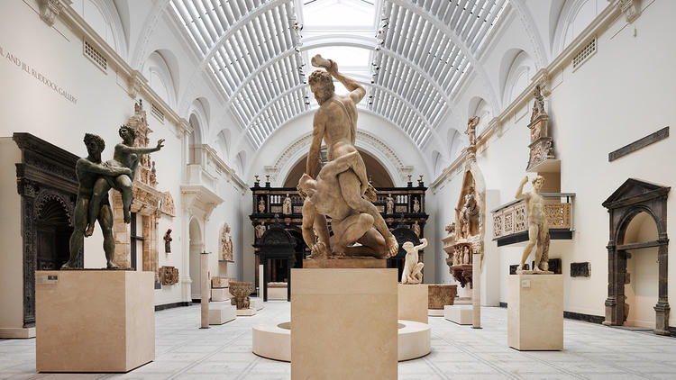

Victoria and Albert Museum
El Victoria and Albert Museum, también conocido como V&A, es el museo más grande del mundo de arte y diseño, con una colección de más de 2,3 millones de objetos. El museo se encuentra en South Kensington, Londres, y fue fundado en 1852 con el objetivo de educar e inspirar a los visitantes a través de la belleza y la creatividad del arte y el diseño.
El V&A alberga una impresionante colección de objetos que abarcan más de 5.000 años de historia, desde la antigüedad hasta la actualidad. La colección incluye arte decorativo, moda, joyería, escultura, fotografía, dibujos y grabados, y objetos de diseño contemporáneo. Además, el museo organiza exposiciones temporales y eventos especiales durante todo el año.
Entre las obras más destacadas del V&A se encuentran la joya egipcia del siglo XVIII, la Galería de las Fiestas, la mayor colección de moda del mundo y la colección más grande de cerámica de Europa. El museo también cuenta con una amplia gama de galerías temáticas, como la Galería de Asia, la Galería de Arte Islámico y la Galería de Escultura y Artes Decorativas.
- Extensión: 51.032 m²
- Colección: más de 2,3 millones de objetos
- Obras destacadas: joya egipcia, Galería de las Fiestas, colección de moda, cerámica
- Galerías temáticas: Galería de Asia, Galería de Arte Islámico, Galería de Escultura y Artes Decorativas
- Ubicación: South Kensington, Londres